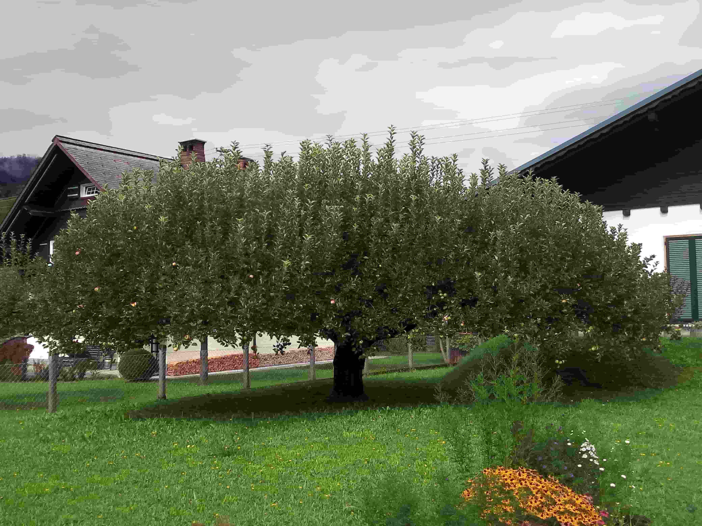

Bad Ischl is a picturesque Austrian town in the Salzkammergut region, known for its imperial history, charming architecture, and beautiful Alpine scenery. This page presents my personal travel memories and photographs from this lovely destination.